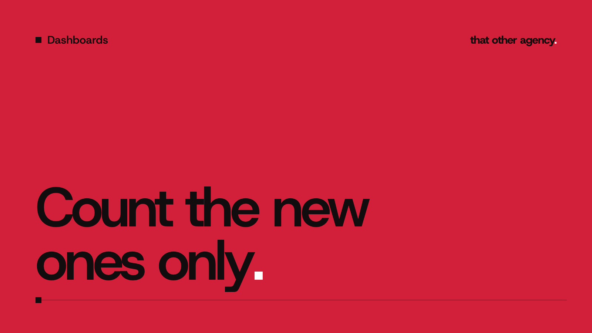

Dashboards
How to work out your real new customer CAC on Shopify.

Ask Meta what a customer costs and it will give you a cost per purchase. Ask Google and you get a cost per conversion. Neither is your Shopify new customer CAC: what it really costs to win someone who has never bought from you before. That number decides whether growth pays, and it is nearly always higher than the ad platforms suggest. Here is how to work it out from your own store data.
The Shopify new customer CAC formula
New customer CAC = marketing spend ÷ new customers
CAC stands for customer acquisition cost. The word that matters here is "new". Plenty of reports divide spend by every order, or by every customer who bought. Those figures look better because returning customers are cheap to bring back, mostly through email, and many of them would have bought anyway. If you are deciding how much you can afford to spend to grow, only the new ones count.
Work it out for a whole month first. A single day or week jumps around too much to act on.
Step 1: add up every pound of spend
Start with the ad platforms, then decide what else belongs in the sum:
- Every paid channel. Meta, Google, TikTok, Pinterest and anything else you paid for in the month. Use the amount each platform actually spent, not the budget you set.
- Creator and affiliate fees. If you pay creators for ads or pay commission on sales, that is acquisition spend too.
- Agency or freelancer fees for running ads. Optional. Some brands keep these out and call the result paid media CAC. Others add them in for a fully loaded CAC. Pick one and stick to it, so this month compares fairly with last month.
Use spend excluding any VAT you can reclaim, so the figure is what the ads truly cost you. Leave out email and SMS tools: those mostly sell to people who already bought.
Step 2: count new customers in Shopify
Shopify already splits sales into new and returning customers. In your admin, go to Analytics, then Reports, and look under the Customers category for the new versus returning customer sales report (older stores may see it called first time versus returning). Shopify counts a customer as new when the order is their first one with your store. Set the dates to your month and note the number of new customers.
Before you use it, check for orders that should not be there:
- Test, staff and replacement orders. Free replacements and orders placed by your own team are not customers you paid to win.
- Wholesale or trade orders. If they go through the same store, filter them out by tag or sales channel.
- Guest checkouts with a new email. A returning customer who checks out with a different address looks new. You cannot fix this fully, but it is worth knowing the count runs slightly high.
Subscription renewals are fine. They come from customers who already ordered, so Shopify treats them as returning and they do not inflate the new count.
A worked example
Here is a made up month for a Shopify store:
- Meta spend: £6,000
- Google spend: £2,500
- Creator fees: £1,500
- Total spend: £10,000
- Orders in Shopify: 400, of which 160 came from new customers
- Cost per order. £10,000 ÷ 400 = £25. This is the flattering version.
- What Meta says. Ads Manager claims 220 purchases on its £6,000, so about £27 each.
- New customer CAC. £10,000 ÷ 160 = £62.50.
Same month, same spend, and the real cost of a new customer is more than double the number on the ad platform. If the first order only leaves you £30 after costs, every new customer starts out £32.50 in the red. That can be fine for a brand with strong repeat buying. It is a problem if you did not know it.
Why Ads Manager shows a lower number
- It counts returning customers. A purchase from someone on your email list who clicked an ad still counts as a purchase in Meta.
- Platforms share the credit. Meta, Google and Klaviyo can all claim the same order. We go through this in Klaviyo, Meta and Google all claim the same sale.
- Views count as well as clicks. Meta's default attribution includes people who saw an ad and bought within a day without clicking. Our post on why Shopify and Meta never match covers the rest.
- Each platform only sees its own spend. Your creator fees and other channels never appear in Ads Manager's cost per purchase.
What to do with the number
On its own, a CAC of £62.50 is neither good nor bad. Compare it with what a new customer is worth. Start with the profit on the first order, worked out as in our guide to break even ROAS for a UK Shopify store. Then look at how many new customers order again within 90 days or six months, and what those orders leave you. When the profit from a customer's orders passes their CAC, you have paid them back.
Track it every month next to the count of new customers. If CAC rises while new customers fall, the spend is drifting toward people who already know you. Our post on how product brands can lower CAC has four places to look first.
How we track it for clients
Every custom dashboard we build pulls spend from each ad platform and new customers straight from Shopify, so new customer CAC is there every morning without a spreadsheet. You can see how that looks with made up data in our live dashboard demo. If you want the same for your store, every build starts with a consultation and a fixed quote.
Frequently asked questions
Is CAC the same as cost per acquisition (CPA)?
Not quite. CPA is usually what an ad platform reports for any conversion it counts, new or returning. New customer CAC uses all your spend and only first time customers from Shopify, so it is the stricter number.
Should I include discount codes in CAC?
Most brands leave discounts out of CAC and count them as lower revenue on the first order instead. Either works, as long as you treat them the same way every month and do not count them twice.
How often should I work out new customer CAC?
Monthly for decisions, weekly to spot problems early. Weekly figures move around more, especially after a big sale or when a new campaign is still learning, so look at the trend rather than one week.